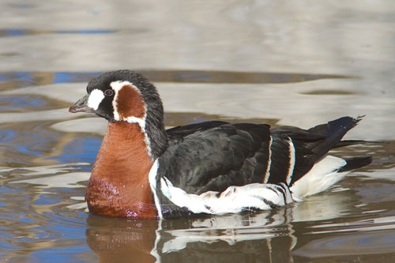

Durata de viata: Pana la 20 de ani
Unde traieste (mediu de viata): Iazuri mari, rauri
Dieta: Omnivore
Clasa: Aves
Nume stiintific: Branta Ruficollis
Ce mananca (mancarea principala): Iarba, seminte, fructe de padure
Predatori: Vulpi, bufnite, caini salbatici
Gasca cu gat rosu (Branta ruficollis) este o specie pe cale de disparitie, protejata la nivelul Uniunii Europene. Pasarea rara aduce anual subventii agricole mai mari fermierilor care detin suprafete de teren in zonele naturale protejate, indiferent daca respectivele terenuri sunt sau nu cultivate. Gastele sunt afectate de constructiile din zona costiera si de modificarea zonelor agricole; adesea sunt alungate de vanatori (desi au interzis la vanatoare) din zonele de hranire.
Gasca cu gat rosu este inclusa pe lista celor mai periclitate specii de pasari care traiesc temporar in Europa, fiind ocrotita pe plan international prin Conven?ia pentru Conservarea Vietii Salbatice si a habitatelor Europene (Berna - 1979, semnata de Romania in 1993). In Romania apare doar la sfarsitul lunii octombrie si poate fi observata pana in luna martie. Mai exista numai 55.000 de gaste-cu-gat-rosu in toata lumea. Aproape 90% dintre ele ierneaza in zona de coasta a Romaniei si in partea de nord a coastei Bulgariei, in cateva locuri precum LaculTechirghiol , Razelm, Sinoe, Golovita etc
In vederea unei mai bune intelegeri a dinamicii populatiei si a masurilor de protectie ce se impun in cartierele de iernare, a luat nastere un program de numaratori simultane in Romania, Bulgaria si Ucraina. Astfel ca, incepand cu luna noiembrie a fiecarui an si pana in martie, au loc cate doua numaratori pe luna la locurile cele mai importante in care au fost observate in ultimii ani concentrari de gaste cu gat rosu.
Primele numaratori simultane au avut loc, incepand cu anul 1990 in Romania si Bulgaria. Din 2004, acestor tari li s-a alaturat si Ucraina. In Bulgaria, in luna februarie a fiecarui an (cand pasarile se aglomereaza in zona lacului Shabla) au loc numaratori conduse de cei de la WWT (Wildfowl & Wetland Trust) si de Societatea Bulgara pentru Protectia Pasarilor, perioada in care au loc observatii ce inregistreaza nu numai efectivul speciei, ci si date legate de varsta pasarilor (numarul de tineri si numarul de adulti).
Pentru a minimaliza amenintarile pe care aceasta specie le infrunta de-a lungul rutei de migratie, ONG-urile mai sus amintite, alaturi de cele din Rusia, Kazakstan ?i Azerbaijan, precum si BirdLife International, Societatea Regala pentru Protectia Pasarilor (RSPB) si Conven?ia pentru Protejarea Pasarilor Acvatice Euro-Asiatice (AEWA - African Eurasian Waterbird Agreement) sunt reunite in cadrul grupului cu numele: Grupul International de Lucru pentru Gasca cu Gat Rosu.
Curiozitati:
- Gasca cu gat rosu ierneaza in Ucraina, Romania si Bulgaria. Este cea mai periclitata specie de gasca din lume, la aceasta ora mai exista doar circa 50.000 de exemplare.
- Gasca cu gat rosu se numara printre cele mai mici si mai rare specii de gasca din lume, care a prezentat de-a lungul timpului rute de migratie interesante, excentrice, iar in prezent este inclusa in categoria speciilor amenintate (threatened), avand statutul de periclitata (endangered) in cadrul listei rosii IUCN (Uniunea Interna? ionala pentru Conservarea Naturii).
- Aceasta specie cuibareste in peninsulele Tamyr, Gydan si Yamal (Rusia), trece prin Kazakstan si ierneaza in Ucraina, Romania si Bulgaria. Aceasta ruta de migratie s-a modificat de-a lungul timpului, in trecut specia ajungand pana in Egipt. Dovada consta in picturile prezentand gasca cu gat rosu gasite pe peretii din interiorul piramidelor.
- Un alt aspect interesant legat de ruta de migratie consta in faptul ca intre anii 1960 si 1970 gasca cu gat rosu si-a schimbat cartierul de iernare din zona Marii Caspice in zona de coasta a Marii Neagre.
- Locurile de cuibarit sunt reprezentate de stanci deoarece temperatura aici e mai ridicata decat in zonele plate ale tundrei, iar un numar mare de cuiburi sunt construite in apropierea unor pasari de prada ca soimul calator , bufnita de zapada sau a unor pasari capabile sa-si protejeze zona de cuibarit precum pescarusul argintiu . Aceste pasari sunt capabile sa ofere protectie impotriva vulpilor sau a altor pradatori.
- Din familia gastelor prezente la noi are penajul cel mai frumos colorat, fiind si singura specie ce prezinta culoarea rosie in penaj. Gatul, pieptul si partile laterale ale capului au culoarea caramiziu aprins, iar restul penajului de culoare inchisa cu dungi albe. Ciocul este scurt si gatul relativ gros. Picioarele sunt de culoare cenusie iar coada este ce culoare neagra.
- Se hraneste in special cu iarba dar si cu seminte de cereale (grau, orz, porumb), insecte.
- Cuibareste in Rusia Siberiana, in peninsulele Gydan, Taymir si Yamal. Masculul si femela fac cuplu pe viata. Femela depune in a doua jumatate a lunii iunie intre 3 si 7 oua de culoare verde. Incubatia dureaza intre 23-25 de zile.
- Rusia Siberiana. Zona de iernare principala este Lacul Durankulak situat in zona de vest a Marii Negre. Alte domenii majore de iernare se gasesc in Azerbaidjan, Ucraina, Romania si Bulgaria. In iernile grele poate fi observata in Grecia si Turcia.
- Degradarea zonelor de cuibarit prin activitati de minerit, vanatoarea accidentala in teritoriile de migratie si iernare atat in locurile de inoptare cat si in cele de hranire, braconajul, deranjul produs de activitatile piscicole pe lacurile folosite pentru inoptare, dezvoltarea urbana in jurul lacurilor folosite pentru inoptare, deranjul determinat de fermierii care le alunga de pe culturile de grau si orz de toamna sunt principalele pericole ce afecteaza specia.